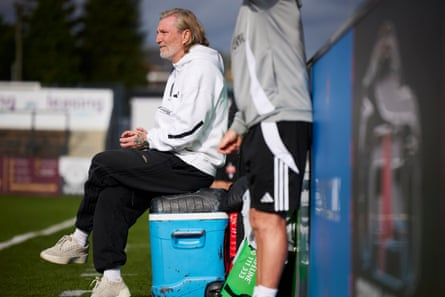
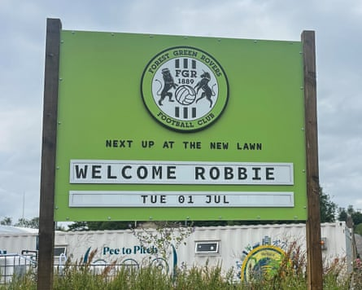

O ff the roundabout at the summit of Spring Hill, the billboard on Another Way that usually displays Forest Green Rovers’ next opponents is shouting about their new manager. “Welcome Robbie,” it reads in block capitals. A club famous for doing things differently have appointed Robbie Savage on a four-year contract, enthused by his sole, record-breaking season in the dugout at Macclesfield FC – the 50-year-old led the team to the Northern Premier League title after transitioning from the role of director of football – rather than fretting whether he is qualified for the job.
“I know there will be a bit of scepticism because I’ve only had one year in management,” says Savage. “I know I will have to win fans over. But I’m not scared of that. I got released from the biggest football club in the world [Manchester United] at 19, told I wasn’t good enough. But I’ve always proved people wrong because I’ve got a great work ethic. I spoke to Brendan Rodgers, Martin O’Neill and Sean Dyche and they all said: ‘What an opportunity.’ Everybody wants to help me so that goes to show I must be OK because they’re willing to help.”
In many ways, Savage’s road to the Cotswolds began in earnest when his eldest son, Charlie, joined Forest Green on loan in January 2023, under Duncan Ferguson. Savage Sr sat alongside the Forest Green owner, Dale Vince, at matches and he remembers Charlie starring in the team that beat Sheffield Wednesday in League One a little more than two years ago and scoring a first career goal a couple of weeks earlier against Bristol Rovers. Forest Green also recently appointed Mark Bowen, Savage’s former Wales teammate, as director of football.
Savage is the latest high-profile appointment, after Ferguson, who lasted six months, and Troy Deeney, who lasted 29 days. Savage succeeds Steve Cotterill, who reached the milestone of 1,000 games en route to the National League playoffs last season. “Robbie is not a high-profile manager, he is a high-profile person,” Vince says. “The media keep saying to me: ‘He has only managed at Macclesfield, does that worry you?’ It is a valid question but, no, it doesn’t.”
Savage’s departure from Macclesfield was not an ordinary exit given he had a 10.9% stake in the club reborn four years ago after the collapse of Macclesfield Town. He previously spoke of building the club “from the first brick” with his best friend, Robert Smethurst, the co-owner. Savage concedes confirmation of his being removed as a director on Companies House last weekend hit home and he plans to sell his remaining shares in Macclesfield shares .
Robbie Savage on the touchline at Macclesfield last season.Photograph: Christopher Thomond/The Guardian
He believes his experiences of being a part-owner at Moss Rose will help him as a full-time manager. “I’m not scared of taking risks. As an owner sometimes you can feel isolated if results go against managers; I’ve seen it and witnessed it. But we’re all in this as one. Whatever happens, I’m a football person. If results don’t go our way, I understand football. I can take it. I’ve sacked a manager when we’ve been top of the league [Danny Whitaker at Macclesfield]. So I get it. No problem. But one thing I couldn’t do with this opportunity with good people was not have a go.”
Savage plans to immerse himself in the Cotswolds town. “I want to embrace the culture,” he says. “I’ll be moving here, I’ll be looking for a place. I’ve signed a four-year contract, I want to be here for four years. I want to take this club back to the EFL. It was the first village club to get into the EFL. When you walk into the training ground, you see the ambition and you want to be a part of that. Hopefully we can grow the fanbase as well … At Macclesfield in the league [when we started] we had an average attendance of 1,250 and when I left it was 3,150.”
Robbie Savage’s arrival at Forest Green Rovers is announced loud and clear.Photograph: Ben Fisher/The Guardian
Savage met Forest Green staff on Monday and took training for the first time on Tuesday at their new base off junction 13 of the M5, over the road from the site of their planned new all-timber 5,000-capacity stadium, designed by Zaha Hadid Architects. Vince, who is working to turn discarded fishing nets and lobster pots from waters in Scotland into goal nets at Forest Green facilities, says of the stadium: “If we’re lucky, we’re a year away from starting work on it. It’s coming, we’ve got consent. There’s a road issue we’ve got to resolve. The stadium is part of the plan to get ourselves into the Championship.”
Savage, Forest Green’s sixth permanent manager in two years, jokes he will be in the running to replace Pep Guardiola at Manchester City if he achieves the feat within his contract. Vince believes Savage’s positivity will permeate. “This was not part of why we recruited him but I saw him as a pundit when Man United were playing Lyon [in the Europa League quarter‑finals],” Vince says. “There were only a few minutes left and all the other pundits on the panel were saying: ‘They’ve blown it.’ Not Robbie. He was like: ‘They just need two goals. They just need to get the ball to [Harry] Maguire.’ And they won. Imagine having that on your touchline.”
Now it is a reality. “I’m not here because I know Dale, I’m not here because I know Mark Bowen,” says Savage, whose first game is a friendly against Slimbridge AFC on Friday. “I’m here because they believe in me and I believe in the project.”